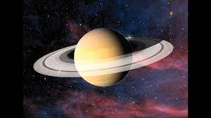

There are many planets in this Universe. Our Solar System is called the solar system because solar is used to descibe this that are in relation with our star (the sun).

Our solar system has a Star, which is often called the sun. This Star holds all the planets, moons etc in place using its gravity. The Planets are: Mercury, Venus, Earth,
Mars, Jupiter, Saturn, Uranus, and Neptune. The Dwarfs are Pluto, Many different moons, and meteoroids.
Mercury is the closest planet to the sun and the smallest planet in the solar system — it is only a little larger than Earth's moon. Mercury zips around the sun in only
88 days and because it is so close to our star (about two-fifths the distance between Earth and the sun).Mercury experiences dramatic changes in its day and night temperatures.
Mercury temperatures can reach a scorching 840 F (450 C) in the day, which is hot enough to melt lead.
Meanwhile, on the night side, temperatures drop to minus 290 F (minus 180 C).
Venus is the second planet from the sun and is the hottest planet in the solar system. Its thick atmosphere is extremely toxic and composed of sulfuric acid clouds, the
planet is an extreme example of the greenhouse effect.
Earth, our home planet, is the third planet from the sun. It is a water world with two-thirds of the planet covered by water. Earth's atmosphere is rich in nitrogen and
oxygen and it is the only world known to harbor life.

Mars is the fourth planet from the sun. It is a cold, desert-like planet covered in iron oxide dust that gives the planet its signature red hue. Mars shares similarities
with Earth: It is rocky, has mountains, valleys and canyons, and storm systems ranging from localized tornado-like dust devils to planet-engulfing dust storms.

Between Mars and Jupiter lies the asteroid belt. Asteroids are minor planets, and according to NASA there are approximately between 1.1 and 1.9 million asteroids(opens
in new tab) in the main asteroid belt larger than 0.6 miles (1 km) in diameter and millions more smaller asteroids.

Jupiter is the fifth planet from the sun and the largest planet in the solar system. The gas giant is more than twice as massive as all the other planets combined,
according to NASA(opens in new tab).
Saturn is the sixth planet from the sun and is famous for its large and distinct ring system. Though Saturn is not the only planet in the solar system with rings.
Uranus is the seventh planet from the sun and is a bit of an oddball. It has clouds made of hydrogen sulfide, the same chemical that makes rotten eggs smell so foul.
It rotates from east to west like Venus. But unlike Venus or any other planet, its equator is nearly at right angles to its orbit — it basically orbits on its side.
Neptune is the eighth planet from the sun and is on average the coldest planet in the solar system. The average temperature of Neptune at the top of the clouds is
minus 346 degrees Fahrenheit (minus 210 degrees Celsius).